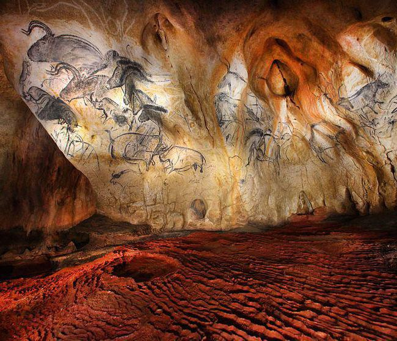

Découverte en 1994 dans les gorges de l'Ardèche, la grotte Chauvet a bouleversé l'histoire de l'art préhistorique. Elle abrite des peintures et gravures vieilles d'environ 36 000 ans, réalisées par les tout premiers artistes de l'humanité : chevaux, lions, rhinocéros et bien d'autres animaux saisis avec un réalisme saisissant. Le site original, fragile, n'est pas ouvert au public, mais sa réplique, Grotte Chauvet 2 - Ardèche, permet à chacun de découvrir cette œuvre exceptionnelle, à environ une heure de route des Cabritas.

Une découverte qui a changé notre regard sur l'art préhistorique
Les peintures de la grotte Chauvet sont aujourd'hui considérées comme le plus ancien grand ensemble d'art pariétal connu au monde, inscrit au patrimoine mondial de l'UNESCO. Leur sophistication, l'usage de la perspective et du mouvement, ont surpris les chercheurs et repoussé de plusieurs millénaires ce que l'on pensait connaître des débuts de l'art humain.
La plus grande réplique de grotte ornée au monde
Ouverte en 2015 dans un parc boisé de 15 hectares, la Grotte Chauvet 2 - Ardèche est devenue le site culturel le plus visité de tout le département. La visite guidée de la réplique est complétée par la Galerie de l'Aurignacien, consacrée aux hommes et aux animaux de cette époque, ainsi que par l'exposition immersive « Chauvet, l'Aventure Scientifique », qui retrace le travail minutieux des chercheurs sur le site original. Des ateliers et animations sont également proposés pendant les vacances scolaires et les week-ends d'avril à octobre, ce qui en fait une sortie idéale en famille.
Bon à savoir avant votre visite
La visite guidée de la réplique dure environ une heure et se fait par petits groupes accompagnés d'un médiateur, ce qui rend la réservation en ligne fortement conseillée en haute saison. Le billet d'entrée donne accès à l'ensemble du site : la réplique de la grotte, la Galerie de l'Aurignacien et l'exposition scientifique, de quoi occuper une bonne demi-journée. Le site étant intégralement couvert et climatisé, il constitue une excellente option en cas de météo incertaine ou de fortes chaleurs estivales. Sa proximité avec le Pont d'Arc et Vallon-Pont-d'Arc permet facilement de combiner les deux visites dans la même journée depuis Les Cabritas.
Infos pratiques depuis Les Cabritas
- Distance depuis Flaviac : environ 1h de route
- Meilleure période : toute l'année, site couvert
- Idéal pour : culture, histoire, familles, jours de pluie
Envie de découvrir La Grotte Chauvet 2 - Ardèche depuis votre gîte en Ardèche ?
Les Cabritas vous accueillent à Flaviac, au cœur de l'Ardèche, pour un séjour confortable avec piscine privée, à deux pas des plus beaux sites de la région.
Vérifier les disponibilités